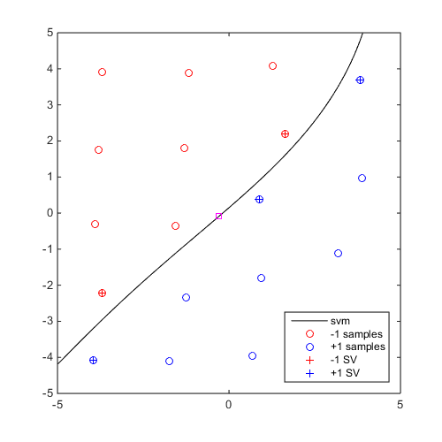

CODES / rbdo / dbl
Double loop RBDO using RIA or PMA
Contents
Syntax
- res=CODES.rbdo.dbl(obj,g,Pf_T,z_start,theta_start,dim) solve the RBDO problem for the objective function obj, set of constraints g, target probabilities Pf_T, starting at z_start and theta_start (both can be defined to [] if no deterministic of hyper-parameter design variables respectively). dim specifies the number of random variables.
- res=CODES.rbdo.dbl(...,param,value) uses a list of parameters param and values value (see, parameter table).
Description
Solves the RBDO problem defined as:
Parameters
| param | value | Description |
|---|---|---|
| 'ra' | 'RIA', {'PMA'} | The realiability technique to use, RIA or PMA. |
| 'T' | function_handle | Transformation function. |
| 'Tinv' | function_handle | Inverse transformation function. |
| 'z_lb', 'z_ub', 'theta_lb', 'theta_ub' | real floats | Lower and upper bounds on z and theta. |
| 'MultiStart' | {'CODES'}, 'MATLAB' | Defines whether MATLAB or CODES multistart fmincon should be used. |
| 'Display' | {'off'}, 'iter', 'final' | Defines the verbose level. |
| 'sign' | {'both'}, 'plus', 'minus' | Search generalized "max-min" using all samples, only +1 samples or -1 samples |
In addition, options from MultiStart can be used as well, when 'MultiStart' is set to 'MATLAB'.
Example
Compute and plot a generalized "max-min" sample
DOE=CODES.sampling.cvt(20,2,'lb',[-5 -5],'ub',[5 5]); svm=CODES.fit.svm(DOE,DOE(:,1)-DOE(:,2)); x_gmm=CODES.sampling.gmm(svm,@(x)sum(log(normpdf(x)),2),@(N)normrnd(0,1,N,2)); figure('Position',[200 200 500 500]) svm.isoplot('lb',[-5 -5],'ub',[5 5]) plot(x_gmm(1),x_gmm(2),'ms')
Mini Tutorial
 |
A mini tutorial of the capabilities of the gmm function. |
References
- Lacaze and Missoum, (2014): Lacaze S., Missoum S., (2014) A generalized "max-min" sample for surrogate update. Structural and Multidisciplinary Optimization 49(4):683-687 - DOI
Copyright © 2015 Computational Optimal Design of Engineering Systems (CODES) Laboratory. University of Arizona.
|
|
Computational Optimal Design of Engineering Systems |

|